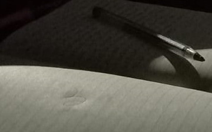

Luna desde mi casa
Me agradan los días del mes en que la luna se puede observar de día y sobre todo cuando esta completamente despejado, siempre he sentido que es en estos momentos en que la gente es en donde mas mira hacia el cielo y se sorprende de este.
Un sitio verde y azul
Desde que tengo memoria siempre he estado rodeada de naturaleza y desde que tengo celular siempre he tenido un gran fanatismi por tomar una foto de diferentes puntos de este para poder captar exactamente lo que mis ojos ven y a su vez poder captar las emociones que este transmite.
Camino a mis abuelos desde el cerro
Existe dos caminos para poder llegar donde mis abuelos y uno de ellos es el cerr, camino que no me agrada ya que siempre logra marearme. Sus vistas son hermosas pero su camino siempre esta en mal estados y es muy fificil el transitarlo.
Árbol
Uno de mis colores favoritos es el verde claro junto al azul, son colores que combinan muy bien, sobre todo cuando de la naturaleza esta se trata. Son colores que me trasmiten recuerdos recuerdos agradables y sencillos.

Tarde de lectura
La lectura es uno de mis momentos mas tranquilizantes del día, es una de mis actividades favoritas y una de las que me relaja. Mi mamá de pequeña juntos a mis hermanos nos enseño que a pesar de ser una obligación que no nos agradaba del colegio, la lectura es un pequeño escape.

Noche de música
Siempre he sentido que la música ayuda a transmitir de una forma muy hermosa los sentimientos, ademas de eso la música muchas veces define a una personas y a su vez ayuda a saber como es alguien, en lo que piensa y lo que es. En la madrugada siempre las ideas corren de una forma mas ordenada para ser escrita.
Cerro el Cañi
El Cañi es uno de los lugares más famosos de Pucón para hacer trekking, es el primer lugar que te recomiendan cuando estas de paso. Dura al rededor de cinco horas la subida, hay lugares en los que te arrepientes de estarlo subiendo y en otros en los que te hacen realmente feliz.
Temuco-Villarrica
Durante este año, despues de Julio la carretera entre Temuco y Villarrica es la que me ha tocado observar. Un poco cansada pero siempre acompañada. Es una ruta la cual la mayoría de veces la recorro acompañada porque aunque la conozca bien muchas veces si le temo.
Tarde de campo
Una de las cosas maá difíciles de hacer es lograr tomar una foto normal cuando te encuentras con niños, siempre desean contante atención y para ellos las pequeñas bromas son las más graciosas para pasar el momento..
Nubes en el crepúsculo
El cielo es mi vista preferida, siempre que lo veo me llena el pecho de paz y alegría. Me cercioro de siempre tomar una fotografía desde los lugares que me encuentro y los diversos momentos y colores de este.
Villarrica-Pucón
Camino a mi hogar.
Villarrica-Pucón
Este es uno de los lugares favoritos de la gente de la zona para poder tomar colectivo y a su vez el lugar favorito de los colectiveros ya que siempre hay gente que recoger. Durantes los veranos es uno de mis lugares mas recurrentes ya sea por el trabajo o una salida con amigos, además es el cruce para todas las villas.
Por mi ventna lado derecho
Una de mis vistas favoritas a lo largo de mi vida siempre ha sido la que me entrega la ventana de mi habitación, es lo primero que veo al despertar y lo ultimo al dormir. Me gusta sobre todo en las tardes cuando el crepúsculo hace lo suyo con los colores pintando a las nubes de un rosa pastel.
Vista de mi ventana lado izquierdo
La casa en la que vivo es realmente pequeña, cuenta con tres habitaciones un pequeño baño, comedor y cocina, pero me agrada vivir en este lugar ya que la mayoría de mis vecinos son gente alegre y muy agradable la cual es muy divertido entablar una conversación.

Una tarde en la casa de los abuelos
Tarde en la plaza
La plaza es una de las actividades favoritas de mi hermano menor, pero desde la llegada de la pandemia este habito se perdió y con ella todas las fotografías en las que se enseñan como él y el lugar van cambiando al paso del tiempo.
Mañana donde los abuelos
El lugar en donde viven mis abuelos queda a dos horas y medias de distancia desde donde yo vivo, a medida que crecía se me hacia mas difícil el poder visitarlo ya que tuve que hacerme carga de mas y mas cosas que al final me dejaban con poco tiempo.
Pasillo taller
El arte se puede enseñar de diferente maneras, a veces comprensible para cierto tipo de publico pero agradable para la mayoría. Es lo que me deja claro este pasillo.
Volcán Villarrica
El volcán Villarrica desde su erupción en el año 2015 siempre se le vio hasta la fecha con humo, a veces mucho otras veces poco. Es uno de los momentos que mas recuerdo, ya que la noche que hizo erupción seria al día siguiente mi primer día en el liceo y yo de verdad deseaba no ir.

Estacionamiento Monte Maria
Este lugar es lo único cerca de mi casa que aun resiste lo verde, la mayoría de lugares esta ocupado por casas y a cada año que pasa son mas y mas, quitándole lo hermoso y turístico que tenia Pucón desde un comienzo.
Llegada a la casa por la tarde
El sol siempre sale por en frente de mi ventana, volviendo en el verano a mi habitación muy caluroso, a veces lo encuentro injusto porque mi habitación es mi lugar favorito y se ve afectado por el sol, pero otras veces me agrada cuando me inspiro a dibujar.
Camino interncional-Pucón
Esta es una de las carreteras mas recorrida por la gente que redice en Pucón y sus alrededores, pero hay solo un momento en la que siempre se encuentra mas vacía,
que es a las seis y siete de la mañana. Esta es una imagen que transmite frió ya que es el momento en la que las temperaturas están muy bajas.


{kind=link}
{kind=link}
{kind=link}
{kind=link}
{kind=link}
{kind=link}
{kind=link}
{kind=link}
{kind=link}
{kind=link}
{kind=link}
{kind=link}
{kind=link}
{kind=link}
{kind=link}
{kind=link}
{kind=link}
{kind=link}
{kind=link}